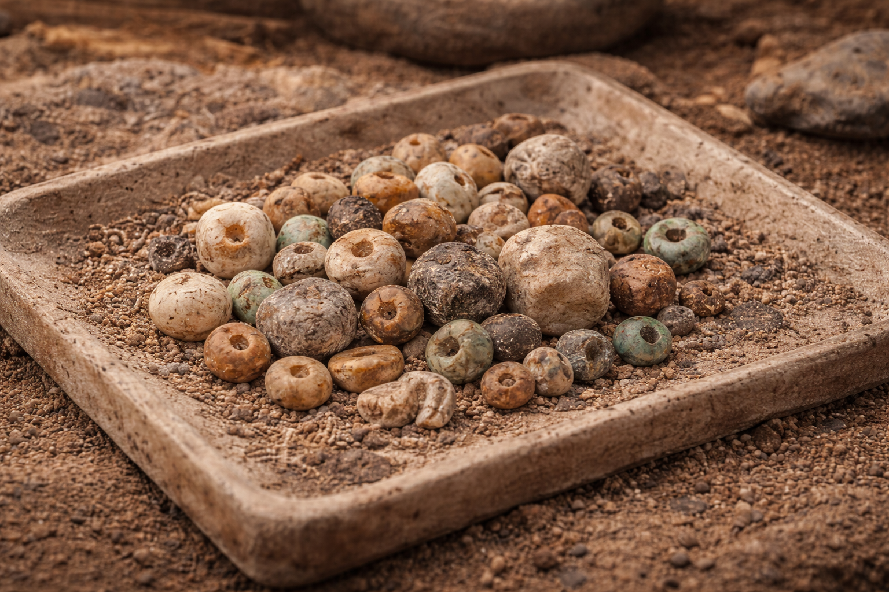
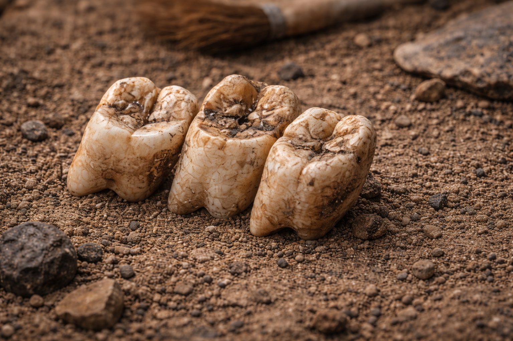
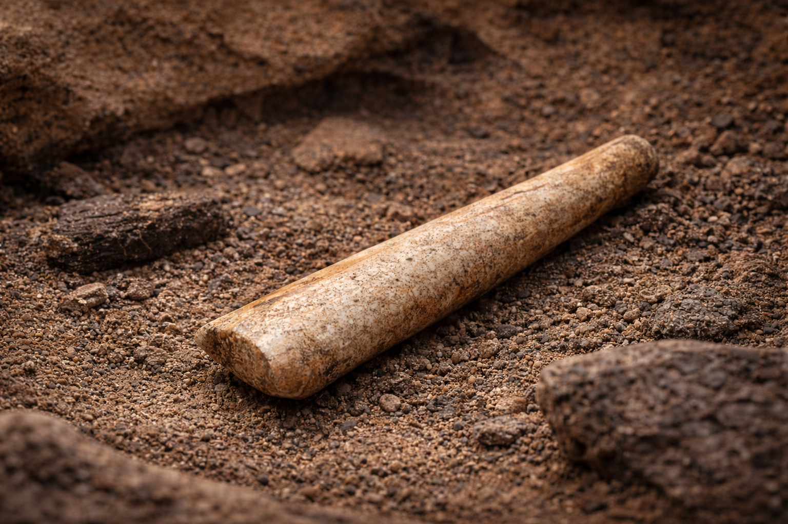

The content in this gallery was created with AI under human direction, then reviewed,
edited, and curated by a human before publication. AI contributed to concept and
content generation. Images were generated using AI tools and curated by a human.
Anthropology



Credits / Citations
AI (concept + content): Object metadata generated using AI under human direction and curated by Roman Pankov.
AI (images): Collection illustrations generated using AI tools from structured prompts and curated by a human.
External media: No external copyrighted images were used unless otherwise cited.